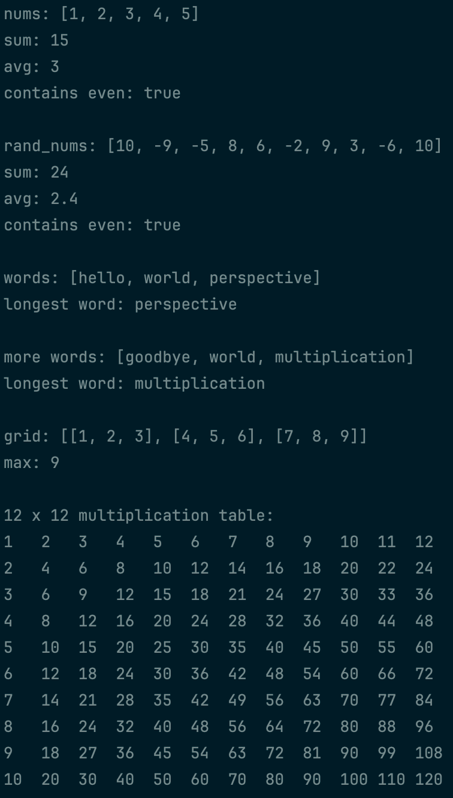

In this project, we’ll practice using arrays in C++! Complete the prompts below to complete the project.
- Create an array of signed 32-bit integers with the numbers 1, 2, 3, 4, and 5, in that order.
- Overload the insertion operator so arrays can be printed using
std::cout. This should work for arrays of any type. - Write a function which accepts any one-dimensional array of signed 32-bit integers and returns the sum of the elements.
- Write a function which accepts any one-dimensional array of signed 32-bit integers and returns the average of the elements. This function should return a precise average and shouldn’t do more work than necessary!
- Write a function which accepts any one-dimensional array of signed 32-bit integers and returns whether there is at least one even number in the array. This function should use the fastest method for checking if a number is even!
- Test these functions on your array if you haven’t already!
- Write a function which takes in a size, a minimum value, and a maximum value and returns a one-dimensional array of the specified size filled with random signed 32-bit integer values between the minimum value and the maximum value.
- Create a random array of size 10 with values between -10 and 10 using the function you just created, then test the other functions you wrote with this new array.
- Create an array of three string literals, then write a function which accepts any one-dimensional array of string literals and returns the longest string literal. Finally, test this function on your array of string literals.
- Create an array of three strings, then write an overloaded function which accepts any one-dimensional array of strings and returns the longest string. Finally, test this function on your array of strings.
- Create a three by three two-dimensional array of signed 32-bit integers, then print the grid.
- Create a function which accepts any two-dimensional array of signed 32-bit integers and returns the largest value in the array, or the minimum value of a signed 32-bit integer if the array is empty. Test this function on your two-dimensional array when it’s done.
- Create a function which accepts a number of rows and a number of columns and returns a two-dimensional array of signed 32-bit integers containing a multiplication table with the given dimensions.
- Create a 12 by 12 multiplication table from the function you just created.
- Write a function which accepts any two-dimensional array of signed 32-bit integers and pretty-prints it so all columns have the same width. Make sure this function works for any array that could be passed in! (Hint: think about how you would know how wide each column needs to be, and think about how you could tell C++ how wide to make a column.)
 Example output